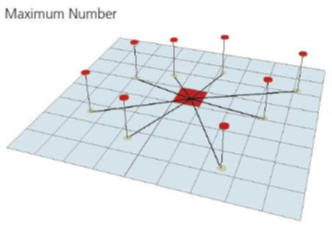
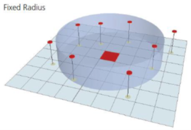
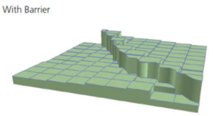
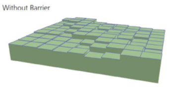

Otros factores
Existen otros factores que pueden influir en el resultado final de la interpolación, tales como el número de puntos utilizados en la interpolación de cada localización. Así podremos limitar en función de un máximo número de puntos o en función de una distancia dada. Esta última suele ser la más utilizada, cuando se sabe el alcance de la variable a interpolar.
Por ejemplo, se sabe que los granos de polen no viajan más de ciertos km, ese límite será muy importante a la hora de configurar la interpolación, porque se sabe de antemano que la estación con datos no puede recoger polen de localizaciones más alejadas de esa distancia.
Otro parámetro que puede constreñir en gran medida los resultados es la existencia o no de barreras en la interpolación. Aunque las barreras parece que son más usuales en la interpolación de elevaciones del terreno, también podrían ser aplicadas a otra serie de variables a estimar.
Las barreras crean discontinuidades lineales en las superficies. Los métodos IDW y Splines soportan el uso de barreras.


 